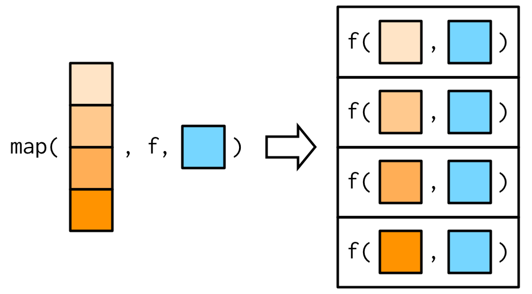
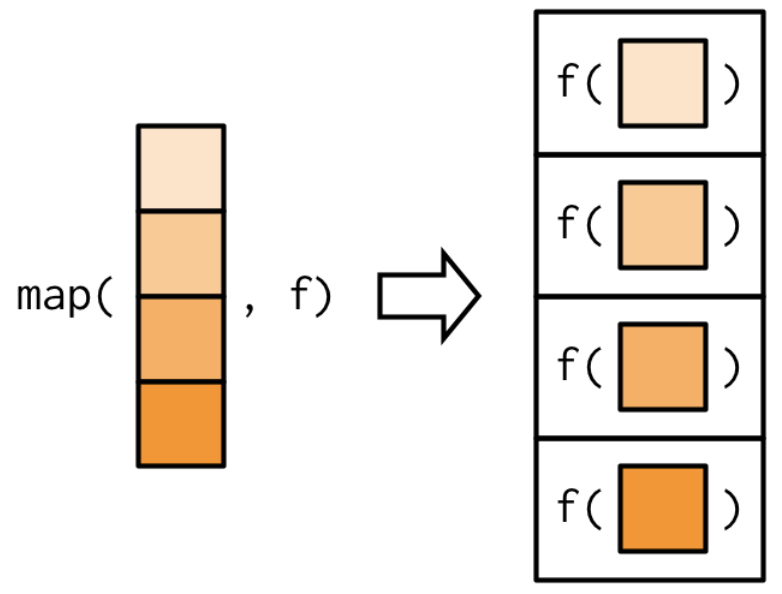
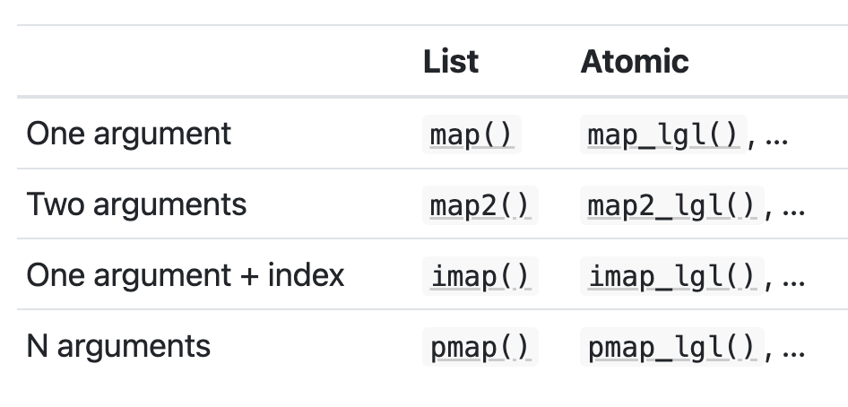

Functions + Iteration
March 3 + 5, 2025
Agenda 3/3/25
- R functions
Data Conclusions

Functions
Function components
Here is a simple function to compute the absolute value.
my_abs <- function(x){
return(ifelse(x >= 0, x, -1*x))
}
my_abs(-3)[1] 3my_abs(c(-2, 5))[1] 2 5- name:
my_abs - arguments:
x - body: everything inside the
{}
Ordering and arguments
my_power <- function(x, y){
return(x^y)
}
my_power(x = 2, y = 3)[1] 8my_power(y = 3, x = 2)[1] 8my_power(2, 3)[1] 8my_power(3, 2)[1] 9- When calling the function, if you don’t name the arguments, R assumes that you passed them in the order defined inside the function.
Function defaults
my_power <- function(x, y){
return(x^y)
}What will happen when I run the following code?
my_power(3)my_power(3)Error in my_power(3): argument "y" is missing, with no defaultFunction defaults
my_power <- function(x, y = 2){
return(x^y)
}What will happen when I run the following code?
my_power(3)my_power(3)[1] 9Function defaults
my_power <- function(x, y = 2){
return(x^y)
}What will happen when I run the following code?
my_power(2, 3)my_power(2, 3)[1] 8Function defaults
my_power <- function(x = 2, y = 3){
return(x^y)
}What will happen when I run the following code?
my_power()my_power()[1] 8Returning a value
average1 <- function(x, remove_nas) {
sum(x, na.rm = remove_nas)/sum(!is.na(x))
}
average2 <- function(x, remove_nas) {
return(sum(x, na.rm = remove_nas)/sum(!is.na(x)))
}
average3 <- function(x, remove_nas = TRUE) {
sum(x, na.rm = remove_nas)/sum(!is.na(x))
}some_data <- c(3, NA, 2, 13, 2, NA, 47)
average1(some_data)Error in average1(some_data): argument "remove_nas" is missing, with no defaultaverage1(some_data, remove_nas = TRUE)[1] 13.4average2(some_data)Error in average2(some_data): argument "remove_nas" is missing, with no defaultaverage2(some_data, remove_nas = TRUE)[1] 13.4average3(some_data)[1] 13.4Returning a value
without
return(): the function returns the last value which gets computed and isn’t stored as an object (using<-).with
return(): the function will return an object that is explicitly included in thereturn()call. (Note: if you (accidentally?) have tworeturn()calls, the function will return the object in the firstreturn()call.)
Control flow
Often in functions, you will want to execute code conditionally. Consider the if-else if-else structure.
if (logical_condition) {
# some code
} else if (other_logical_condition) {
# some other code
} else {
# yet more code
}Control flow
middle <- function(x) {
mean_x <- mean(x, na.rm = TRUE)
median_x <- median(x, na.rm = TRUE)
seems_skewed <- (mean_x > 1.5*median_x) | (mean_x < (1/1.5)*median_x)
if (seems_skewed) {
median_x
} else {
mean_x
}
}Note that (mean_x > 1.5*median_x) | (mean_x < (1/1.5)*median_x) is a TRUE or FALSE question.
some_data <- c(3, NA, 2, 13, 2, NA, 47)
mean(some_data, na.rm = TRUE)[1] 13.4median(some_data, na.rm = TRUE)[1] 3middle(some_data)[1] 3Functions in the tidyverse
Don’t collapse
Functions that return the same number of rows as the original data frame are good to use inside mutate() and filter(). For example, you might want to capitalize the first word of every string:
first_upper <- function(x) {
str_sub(x, 1, 1) <- str_to_upper(str_sub(x, 1, 1))
x
}
first_upper(c("hello", "goodbye"))[1] "Hello" "Goodbye"Functions in the tidyverse
Collapse
Functions that collapse into a single value will work well in the summarize() step of the pipeline. For example, you may want to calculate the coefficient of variation which is the standard deviation divided by the mean.
cv <- function(x, na.rm = FALSE) {
sd(x, na.rm = na.rm) / mean(x, na.rm = na.rm)
}
cv(runif(100, min = 0, max = 50))[1] 0.5623236cv(runif(100, min = 0, max = 500))[1] 0.6191225Functions summary
- Functions can be used to avoid repeating code
- Arguments allow us specify the inputs when we call a function
- If inputs are not named when calling the function, R uses the ordering from the function definition
- All arguments must be specified when calling a function
- Default arguments can be specified when the function is defined
- The input to a function can be a function!
Iterating functions
There will be times when you will need to iterate a function multiple times.
purrr for functional programming
functionals are functions that take function as input and return a vector / list / data frame as output.
alternatives to loops
a functional is better than a
forloop is better thanwhileis better thanrepeat(in terms of computing efficiency)
Benefits
encourages function logic to be separated from iteration logic
can collapse results into vectors/data frames easily
direct connection to parallel processing
Map
map() has (at least) two arguments, a data object and a function. It performs the function on each element of the object and returns a list. We can also pass additional arguments into the function.

variations of map_ functions
The map functions are named by they output the produce. For example:
map(.x, .f)is the main mapping function and returns a listmap_dbl(.x, .f)returns a numeric (double) vectormap_chr(.x, .f)returns a character vectormap_lgl(.x, .f)returns a logical vector

Note that the first argument is always the data object and the second object is always the function you want to iteratively apply to each element in the input object.
map() in practice
map() variants (output)
triple <- function(x) x * 3
map(.x = c(1:3), .f = triple)[[1]]
[1] 3
[[2]]
[1] 6
[[3]]
[1] 9map_dbl(.x = c(1:3), .f = triple)[1] 3 6 9map_lgl(.x = c(1:3), .f = triple)Error in `map_lgl()`:
ℹ In index: 1.
Caused by error:
! Can't coerce from a number to a logical.map_lgl(.x = c(1, NA, 3), .f = is.na)[1] FALSE TRUE FALSEAgenda 3/5/25
- The
map()function - Iterating functions
fastfood dataset from openintro
library(openintro)
fastfood# A tibble: 515 × 17
restaurant item calories cal_fat total_fat sat_fat trans_fat
<chr> <chr> <dbl> <dbl> <dbl> <dbl> <dbl>
1 Mcdonalds Artisan Gr… 380 60 7 2 0
2 Mcdonalds Single Bac… 840 410 45 17 1.5
3 Mcdonalds Double Bac… 1130 600 67 27 3
4 Mcdonalds Grilled Ba… 750 280 31 10 0.5
5 Mcdonalds Crispy Bac… 920 410 45 12 0.5
6 Mcdonalds Big Mac 540 250 28 10 1
7 Mcdonalds Cheeseburg… 300 100 12 5 0.5
8 Mcdonalds Classic Ch… 510 210 24 4 0
9 Mcdonalds Double Che… 430 190 21 11 1
10 Mcdonalds Double Qua… 770 400 45 21 2.5
# ℹ 505 more rows
# ℹ 10 more variables: cholesterol <dbl>, sodium <dbl>,
# total_carb <dbl>, fiber <dbl>, sugar <dbl>, protein <dbl>,
# vit_a <dbl>, vit_c <dbl>, calcium <dbl>, salad <chr>From TidyTuesday Fast food entree data on September 4, 2018.
Anonymous functions and shortcuts
- use
~to set a formula (when the function is neither a single name nor defined byfunction(...) { ...}) - use
.xto reference the inputmap(.x = ..., .f = )
map_dbl(.x = fastfood, .f = function(dog) mean(dog, na.rm = TRUE)) restaurant item calories cal_fat total_fat sat_fat
NA NA 530.9126214 238.8135922 26.5902913 8.1533981
trans_fat cholesterol sodium total_carb fiber sugar
0.4650485 72.4563107 1246.7378641 45.6640777 4.1371769 7.2621359
protein vit_a vit_c calcium salad
27.8910506 18.8571429 20.1704918 24.8524590 NA map_dbl(.x = fastfood, .f = ~mean(.x, na.rm = TRUE)) restaurant item calories cal_fat total_fat sat_fat
NA NA 530.9126214 238.8135922 26.5902913 8.1533981
trans_fat cholesterol sodium total_carb fiber sugar
0.4650485 72.4563107 1246.7378641 45.6640777 4.1371769 7.2621359
protein vit_a vit_c calcium salad
27.8910506 18.8571429 20.1704918 24.8524590 NA map_dbl(.x = fastfood, .f = mean, na.rm = TRUE) restaurant item calories cal_fat total_fat sat_fat
NA NA 530.9126214 238.8135922 26.5902913 8.1533981
trans_fat cholesterol sodium total_carb fiber sugar
0.4650485 72.4563107 1246.7378641 45.6640777 4.1371769 7.2621359
protein vit_a vit_c calcium salad
27.8910506 18.8571429 20.1704918 24.8524590 NA map_dbl(.x = fastfood, .f = mean) restaurant item calories cal_fat total_fat sat_fat
NA NA 530.9126214 238.8135922 26.5902913 8.1533981
trans_fat cholesterol sodium total_carb fiber sugar
0.4650485 72.4563107 1246.7378641 45.6640777 NA 7.2621359
protein vit_a vit_c calcium salad
NA NA NA NA NA The same thing, many ways
Note that .x is the name of the first argument in map() (.f is the name of the second argument).
# the task
map_dbl(fastfood, function(x) length(unique(x))) restaurant item calories cal_fat total_fat sat_fat
8 505 113 117 80 40
trans_fat cholesterol sodium total_carb fiber sugar
10 52 197 103 19 31
protein vit_a vit_c calcium salad
71 22 24 27 1 map_dbl(fastfood, function(unicorn) length(unique(unicorn))) restaurant item calories cal_fat total_fat sat_fat
8 505 113 117 80 40
trans_fat cholesterol sodium total_carb fiber sugar
10 52 197 103 19 31
protein vit_a vit_c calcium salad
71 22 24 27 1 map_dbl(fastfood, ~length(unique(.x))) restaurant item calories cal_fat total_fat sat_fat
8 505 113 117 80 40
trans_fat cholesterol sodium total_carb fiber sugar
10 52 197 103 19 31
protein vit_a vit_c calcium salad
71 22 24 27 1 map_dbl(fastfood, ~length(unique(..1))) restaurant item calories cal_fat total_fat sat_fat
8 505 113 117 80 40
trans_fat cholesterol sodium total_carb fiber sugar
10 52 197 103 19 31
protein vit_a vit_c calcium salad
71 22 24 27 1 map_dbl(fastfood, ~length(unique(.))) restaurant item calories cal_fat total_fat sat_fat
8 505 113 117 80 40
trans_fat cholesterol sodium total_carb fiber sugar
10 52 197 103 19 31
protein vit_a vit_c calcium salad
71 22 24 27 1 # not the task
map_dbl(fastfood, length) restaurant item calories cal_fat total_fat sat_fat
515 515 515 515 515 515
trans_fat cholesterol sodium total_carb fiber sugar
515 515 515 515 515 515
protein vit_a vit_c calcium salad
515 515 515 515 515 #error
map_dbl(fastfood, ~length)Error in `map_dbl()`:
ℹ In index: 1.
ℹ With name: restaurant.
Caused by error:
! Can't coerce from a primitive function to a double.#error
map_dbl(fastfood, length(unique()))Error in unique.default(): argument "x" is missing, with no default#error
map_dbl(fastfood, ~length(unique(x)))Error in `map_dbl()`:
ℹ In index: 1.
ℹ With name: restaurant.
Caused by error in `.f()`:
! object 'x' not foundmapping to a data frame
Would be great if the results were a data frame! If the function outputs a data frame, then we can use list_rbind() and list_cbind() to create a data frame as the final map() output.
- results as rows:
map() |> list_rbind() - results as columns:
map() |> list_cbind()
col_stats <- function(n) {
head(fastfood, n) |>
select(calories, protein, vit_c) |>
summarise_all(mean, na.rm = TRUE) |>
mutate(n = paste("N =", n))
}out1 <- map(c(10,20), col_stats)
out1[[1]]
# A tibble: 1 × 4
calories protein vit_c n
<dbl> <dbl> <dbl> <chr>
1 657 39.5 12.3 N = 10
[[2]]
# A tibble: 1 × 4
calories protein vit_c n
<dbl> <dbl> <dbl> <chr>
1 582. 34.6 12.2 N = 20out2 <- map(c(10,20), col_stats) |> list_rbind()
out2# A tibble: 2 × 4
calories protein vit_c n
<dbl> <dbl> <dbl> <chr>
1 657 39.5 12.3 N = 10
2 582. 34.6 12.2 N = 20out3 <- map(c(10,20), col_stats) |> list_cbind()
out3# A tibble: 1 × 8
calories...1 protein...2 vit_c...3 n...4 calories...5 protein...6
<dbl> <dbl> <dbl> <chr> <dbl> <dbl>
1 657 39.5 12.3 N = 10 582. 34.6
# ℹ 2 more variables: vit_c...7 <dbl>, n...8 <chr>Two+ arguments to map()
map_*() variants (input)

We’ve already described the difference between the columns. Now we cover the difference between the rows.
map2_*()
map2_*()has two arguments,.xand.y- raise each value of
.xto the power of 2
map_dbl(
.x = c(1:5),
.f = function(x) x ^ 2
)[1] 1 4 9 16 25- raise each value
.xto the power.y
map2_dbl(
.x = c(1:5),
.y = c(2:6),
.f = ~ (.x ^ .y)
)[1] 1 8 81 1024 15625imap()
imap()is likemap2()except that.yis derived fromnames(.x)if the data frame has names.If not,
.yis 1, 2, 3, … \(n\) where \(n\) is the number of items in.x. (A data frame has \(n\) columns.)These two calls produce the same result
imap_chr(.x = fastfood,
.f = ~ paste(.y, "has a mean of", round(mean(.x), 1))) |>
head() restaurant item
"restaurant has a mean of NA" "item has a mean of NA"
calories cal_fat
"calories has a mean of 530.9" "cal_fat has a mean of 238.8"
total_fat sat_fat
"total_fat has a mean of 26.6" "sat_fat has a mean of 8.2" map2_chr(.x = fastfood,
.y = names(fastfood),
.f = ~ paste(.y, "has a mean of", round(mean(.x), 1))) |>
head() restaurant item
"restaurant has a mean of NA" "item has a mean of NA"
calories cal_fat
"calories has a mean of 530.9" "cal_fat has a mean of 238.8"
total_fat sat_fat
"total_fat has a mean of 26.6" "sat_fat has a mean of 8.2" pmap()
you can pass a named list or dataframe as arguments to a function
for example
runif()has the parametersn,minandmax
params# A tibble: 3 × 3
n min max
<dbl> <dbl> <dbl>
1 1 1 10
2 2 10 100
3 3 100 1000pmap(params, runif)[[1]]
[1] 2.038837
[[2]]
[1] 86.44043 63.73928
[[3]]
[1] 158.5054 452.5885 731.0714Or use the pipe into pmap():
params |>
pmap(runif)[[1]]
[1] 3.76442
[[2]]
[1] 99.57063 83.03447
[[3]]
[1] 872.9958 141.6864 446.0891An aside…
Interestingly, runif() will take either a scalar or a vector as its first argument. If the first argument is a vector, runif() will return N random uniforms, where N is the length of the vector.
runif(n = 3)[1] 0.76025364 0.72633544 0.08232044runif(n = c(1,3))[1] 0.4915788 0.7554713runif(n = c(10000,12321412424))[1] 0.5641052 0.9001109runif(n = c("rainbow", "unicorn"))[1] 0.6592858 0.7822218pmap() vs map()
Which means that the pmap() code will “work” in map() as well:
params# A tibble: 3 × 3
n min max
<dbl> <dbl> <dbl>
1 1 1 10
2 2 10 100
3 3 100 1000params |>
pmap(runif)[[1]]
[1] 8.354763
[[2]]
[1] 22.00145 34.83011
[[3]]
[1] 490.7894 648.9109 256.3255params |>
map(runif)$n
[1] 0.8670149 0.2922877 0.2456421
$min
[1] 0.5385074 0.6674617 0.4424177
$max
[1] 0.77594009 0.03784851 0.16605208pmap() with expand_grid()
- I like to use
expand_grid()when I want all possible parameter combinations.
expand_grid(n = c(1, 2, 3),
min = c(1, 10),
max = c(10, 100)) # A tibble: 12 × 3
n min max
<dbl> <dbl> <dbl>
1 1 1 10
2 1 1 100
3 1 10 10
4 1 10 100
5 2 1 10
6 2 1 100
7 2 10 10
8 2 10 100
9 3 1 10
10 3 1 100
11 3 10 10
12 3 10 100expand_grid(n = c(1, 2, 3),
min = c(1, 10),
max = c(10, 100)) |>
pmap(runif)[[1]]
[1] 7.597273
[[2]]
[1] 58.45669
[[3]]
[1] 10
[[4]]
[1] 87.31629
[[5]]
[1] 4.247986 6.148149
[[6]]
[1] 54.24720 68.78427
[[7]]
[1] 10 10
[[8]]
[1] 21.86420 90.13759
[[9]]
[1] 3.171491 6.834696 9.026135
[[10]]
[1] 73.65718 31.25866 23.71904
[[11]]
[1] 10 10 10
[[12]]
[1] 86.88795 74.66076 18.31709